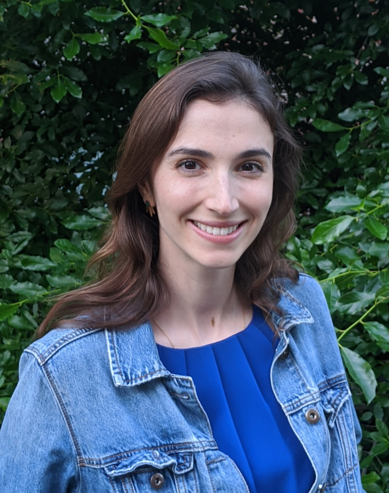

Nediyana Daskalova

About me
I lead Human-AI interaction research at Suno in New York. We are building novel ways people can create music and express themselves with the help of AI. Previously, I was a Research Scientist at Spotify and before that, I completed my PhD in Computer Science, at Brown University, as part of Jeff Huang' Human-Computer Interaction lab .
Updates
Research Projects
Self-E: a self-experimentation app that helps users optimize various aspects of their lives.
SleepBandits (a.k.a. SleepCoacher 2.0): a self-experimentation app that helps users optimize their sleep.
Publications
Self-E: Smartphone- Supported Guidance for Customizable Self-Experimentation.
SleepBandits: Guided Flexible Self-Experiments for Sleep
Investigating the Effectiveness of Cohort-Based Sleep Recommendations
Cohorts of Self-Experimenters: Lessons Learned from Personal Informatics Self-Experiments
"If a person is emailing you, it just doesn't make sense": Exploring Changing Consumer Behaviors in Email
SleepCoacher: A Personalized Automated Self-Experimentation System for Sleep Recommendations
Webgazer: Scalable webcam eyetracking using user interactions
Informing Design of Suggestion and Self-Monitoring Tools through Participatory Experience Prototypes
Case Studies and Other Publications
HeyPillow: Computationally Guided Sleep Behavior Study Through Sensing
Personalized Behavior-Powered Systems for Guiding Self-Experiments
Comparing the Reliability of Amazon Mechanical Turk and Survey Monkey to Traditional Market Research Surveys
It's All About Coupons: Exploring Coupon Use Behaviors in Email